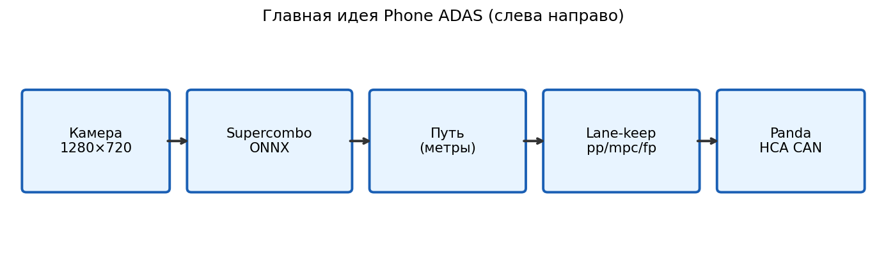

System Overview#
We want a phone on the windshield to keep a Golf 7 near lane center by commanding MQB HCA through a USB Panda. This chapter is the map of the repository before we dive into vision and control math.
Purpose#
The ADAS app:
captures the road with the camera (and supporting IMU / GPS);
runs Supercombo inference on device — on the GPU through a generated
.thneed, with ONNX Runtime as the fallback;plans in curvature and computes a lateral command in native C++;
publishes
HCA_01on VW MQB CAN via Panda — through a platform interface, so the brand is one implementation rather than the architecture;writes a full bag for offline analysis.
This is a research / teaching lane-keep stack — not a full ACC / “autopilot” product.
{kind=link}

Fig. 2 End-to-end path you will learn to trace: sensors → model → path → control → CAN.#
Layers#
layer |
components |
role |
|---|---|---|
Java |
Camera / IMU / GPS, VisionPipeline, Logger, ZMQ |
sensors, inference, UI, bag I/O |
C++ |
|
algorithms and actuation |
Python |
vis, latency, sweeps, MetaDrive, |
analysis and host-sim |
Design rule: lateral algorithms live in C++. Python either analyzes a bag or drives the same native code through pyadas (publish → step → pop_messages). That keeps lab sweeps honest relative to the phone.
The C++ side splits the lateral loop three ways on purpose — Planner decides what shape to drive,
Control decides what command produces it, Platform puts that command on the bus and is the only one
that knows the car is a Volkswagen. Adding a second make (Toyota TSS2) changed no line of the first two;
docs/PORTING.md is the procedure.
Next in this part: Middleware (native bus) → Java layer (camera / inference / ZMQ) → Pipeline (frame → HCA). Also FCW / AEB / LDW for warnings without actuation.
How this was built, in the order it was built#
The layer table above is what the system looks like now. It is not the order anyone would build it in, and following the table as a plan is how people get stuck. The order that works — and the order this book follows — is to close a loop as early as possible and then improve one link at a time.
stage |
what you can do at the end of it |
what you cannot yet |
|---|---|---|
1. bag replay |
run the real C++ lane-keep code on recorded frames |
trust the numbers, since the recording came from a different controller |
2. sensors on the phone |
see live lanes, a live path, live latency |
steer |
3. a native bus |
services that talk without knowing about each other |
know why something arrived late |
4. Panda, receive only |
see the car’s speed, steering angle, and whether HCA is even allowed |
send anything |
5. Panda, transmit |
actually steer, with the panda’s safety model in the way |
know whether it steered well |
6. measurement |
answer that question with a bag and a script |
stop, because now the real work starts |
Stage 6 is where a course usually ends and where this project spends most of its time. Two illustrations of why, both from real runs:
the car did not steer for an entire drive, and the app logged nothing wrong. The panda was reporting a 57-byte health packet where the code expected 58, so every field after the third was read from the wrong offset — including
controls_allowed;the first drive with longitudinal actuation enabled worked exactly as designed and was still a regression: the plan asked for a set speed 4.8 m/s below the current one, all drive, and the bus collected 715 button presses in 28 minutes.
Neither is a control-theory problem. Both were found by comparing two independent measurements, which is what Bags teaches.
# The contract that makes stage 1 possible, and why it is worth building first: the controller cannot tell
# where its path came from.
def lane_keep_step(path_xy, speed_ms):
"""Stand-in for the real service: it sees a polyline and a speed. Nothing else."""
x = [p[0] for p in path_xy]
y = [p[1] for p in path_xy]
# Curvature of a quadratic fit at the vehicle, the same quantity the real feedforward uses.
n = len(x)
sx = sum(x); sxx = sum(v * v for v in x); sxxx = sum(v ** 3 for v in x)
sxxxx = sum(v ** 4 for v in x)
sy = sum(y); sxy = sum(a * b for a, b in zip(x, y)); sxxy = sum(a * a * b for a, b in zip(x, y))
# Solve the 3x3 normal equations for y = a x^2 + b x + c
import numpy as np
A = np.array([[sxxxx, sxxx, sxx], [sxxx, sxx, sx], [sxx, sx, n]], dtype=float)
a, b, c = np.linalg.solve(A, np.array([sxxy, sxy, sy], dtype=float))
return {"cte_m": float(c), "epsi_rad": float(b), "kappa": float(2 * a), "speed": speed_ms}
live = [(i * 1.5, 0.5 * 0.004 * (i * 1.5) ** 2 + 0.20) for i in range(20)] # from the camera
replay = list(live) # from a bag
simulated = list(live) # from MetaDrive
for name, path in (("live", live), ("bag replay", replay), ("simulator", simulated)):
out = lane_keep_step(path, 15.0)
print(f"{name:>11}: cte {out['cte_m']:+.3f} m, kappa {out['kappa']:.4f} 1/m")
print("\nIdentical, by construction. That is what lets a lab sweep mean something.")
Configuration you will touch#
app/src/main/assets/config.json (optional override in app filesDir).
Vehicle knobs (vehicle.*):
"lane_keep_controller": "fp",
"lat_use_vehicle_model": true,
"tire_stiffness_factor": 0.64,
"fp_steer_delay_s": 0.35
Feature flags (nodes.*), e.g. "vision_traffic": false, "phone_stats": true,
"safety_warn": true.
key |
purpose |
|---|---|
|
|
|
which |
|
|
|
\(\kappa\to\) SWA via understeer model |
|
state lookahead for pipeline delay |
|
YOLO; keep |
|
1 Hz CPU / thermal into the bag |
Typical student workflow#
Record or download a session under
adas_logs/....Run
tools/latency.py, bag visualizer, PlotJuggler — establish Hz / e2e.Sweep parameters (
bag/bag_config_sweep.py) at a fixed assumed vision latency.Only then open
services/planner.cpp/lateral/pp_planner.cppwith the Control chapters in hand.
Tip
If CTE looks terrible, ask three questions in order: Is vision ≥ ~9 Hz? Is \(y\) / steer_sign consistent? Is calib sane? Gains come fourth.
Next: Middleware